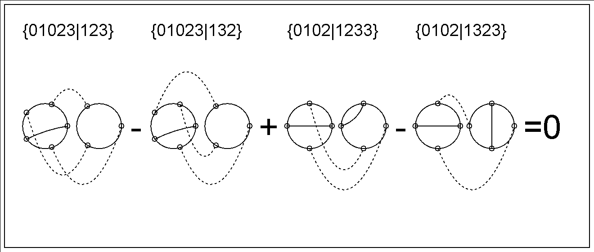

CHORD DIAGRAMS
Computation with Chord diagrams of Vassiliev Invariants
This program allows you to do computations within the algebra of
chord diagrams; in particular, it will find the basis of the space
of chord diagrams for colored links. It will generate and display
the bases and the 4T relations, like this:

With it, you can create images like the one on this page with ease,
and explore the fun world of chord diagrams :)
DOCUMENTATION
Extensive Javadoc
DOWNLOAD
Chord Diagrams is a Java program that has been test on Windows and requires Mathematica
for row-reduction. You need to have Mathematica - Java API classes installed to run it.
Download link:
Java Source Code, Documentation and Binaries
USAGE
- Unpack the archive containing the chordDiagrams folder;
- Using the command line, naviagte to the folder that contains chordDiagrams folder;
- execute "java chordDiagrams/Driver";
- follow the prompts: first, select "1" to compute 4T relations with all diagrams
having N chords and L links by specifying N and L. Then compute the basis and/or draw the results.
- Every time you compute something, the result is saved into a file so you don't have to recompute it later.